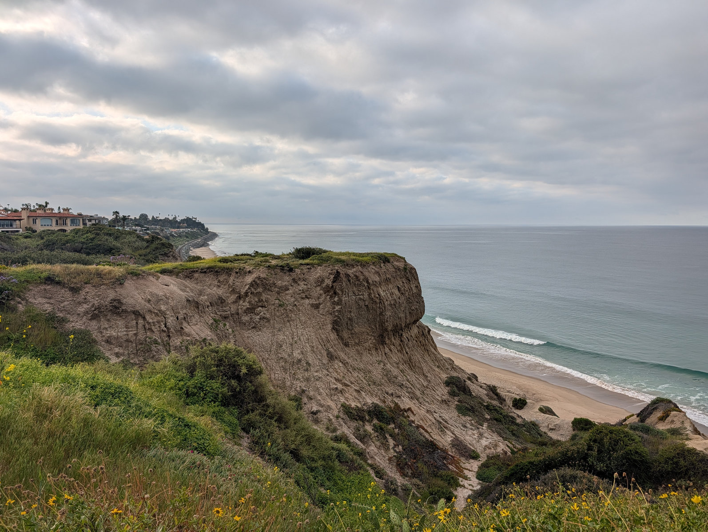
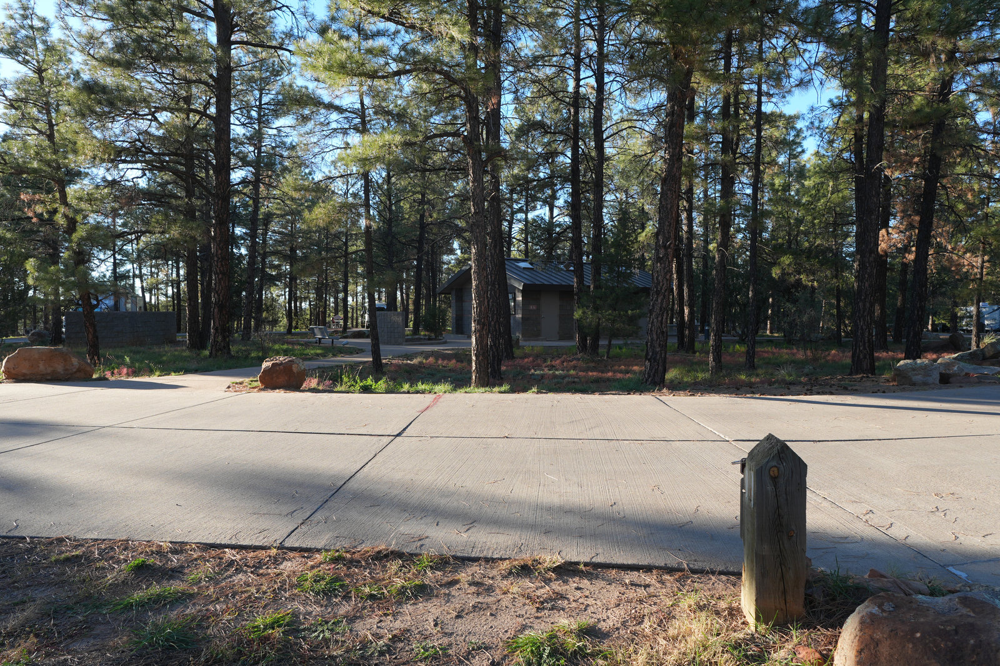
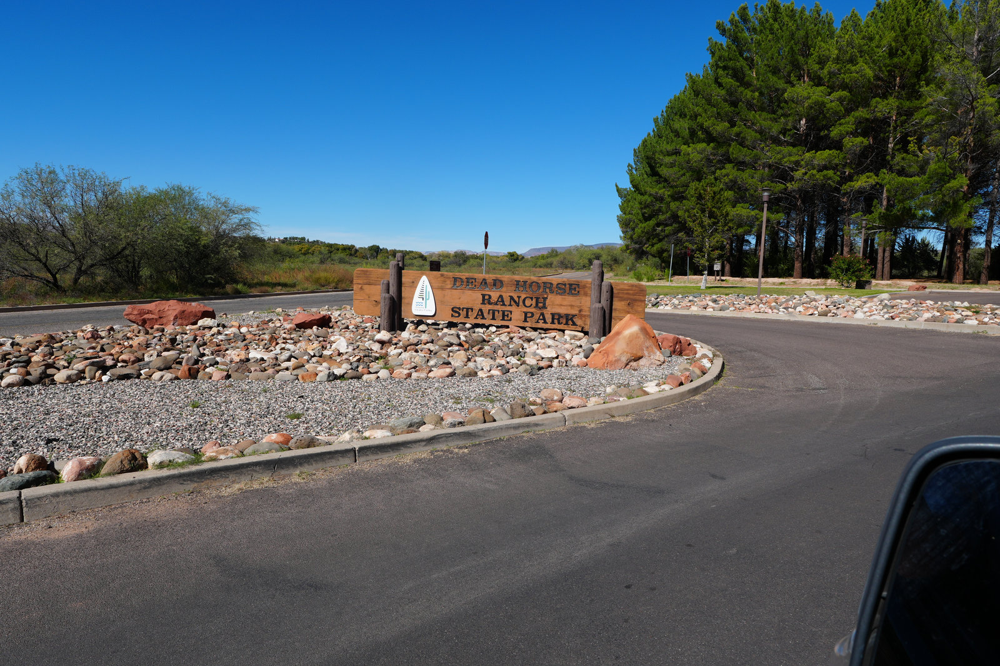
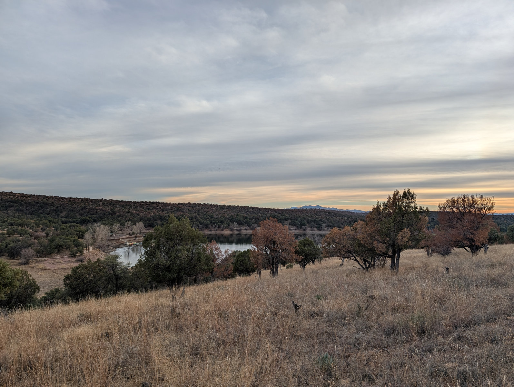
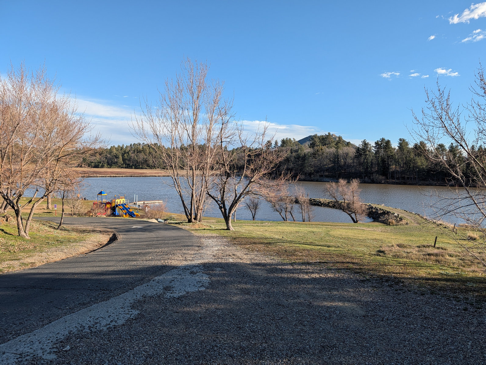
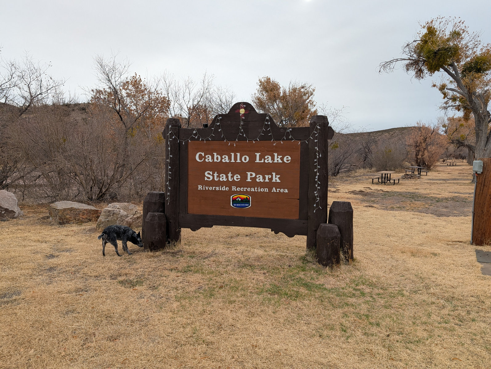

San Clemente State Beach
Blufftop developed camping where the ocean, beach walk, showers, and town nearby give the trip an obvious reason to exist.
 By Chris Follin
By Chris FollinLOW-FRICTION PICKS
I would never start with a dusty dispersed site, a mystery bathroom plan, and a speech about how discomfort builds character. I would choose a campground where the setting carries the trip, the basics are handled, and nobody feels trapped if they decide camping is still not their thing.

Most people who "hate camping" do not hate stars, water, sunsets, coffee outside, or waking up somewhere different. They hate bad sleep, dirty bathrooms, wind, bugs, gear chaos, food stress, and feeling stuck. So the first trip should remove the obvious failure points before trying to be impressive.
Blufftop developed camping where the ocean, beach walk, showers, and town nearby give the trip an obvious reason to exist.

A soft landing in the White Mountains: showers, hookups, lake access, paved-road simplicity, and Show Low close enough to rescue mistakes.

A forgiving state-park setup with hot showers, RV-friendly loops, lagoons, trails, and Cottonwood close enough for a restaurant escape.

A calmer developed campground above Parker Canyon Lake, useful when a short lake walk and less crowd pressure matter more than polish.

The campground is not the star. The lake, nearby pub/restaurant, Julian-area mountain setting, and exit options are why it can work.

Not precious, but useful: showers, restrooms, hookups, dump station, pull-through options, and enough room to make a travel night easier.
This is the sorting table I would use before inviting a reluctant camper. Start with the failure mode they are worried about, then pick the campground that removes it.
| Camp | Why It Works | Comfort Anchor | Best For | Real Caveat | Use It When |
|---|---|---|---|---|---|
| San Clemente State Beach | The beach and bluff view make the trip feel like a coastal stay, not a hardship exercise | Showers, developed sites, beach access, city support nearby | People who want a destination first and camping second | Reservations, campground density, damp coastal nights | The person likes the ocean and needs an obvious reward |
| Fool Hollow Lake | Comfortable Arizona lake camping with enough services to keep the basics easy | Showers, hookups, lake access, Show Low nearby | Families, newer campers, and anyone nervous about bathroom or power logistics | Popular weekends and a developed campground feel | You want Arizona comfort without making the trip primitive |
| Dead Horse Ranch | Cottonwood is close, the facilities are strong, and there are easy non-camping activities | Hot showers, water/electric sites, lagoons, trails, town backup | Shoulder-season first trips and mixed camping/non-camping groups | Summer heat and a less remote setting | The exit ramp matters as much as the campsite |
| Lakeview - Parker Canyon Lake | Quieter lake-country camping where a walk to the water gives the trip a gentle purpose | Developed campground, vault toilets, water spigots, marina area nearby | People who do better with calm than with spectacle | Remote feel, bear country, limited backup when the marina is closed | The group can handle a simpler campground if the setting is peaceful |
| Lake Cuyamaca | The lake, pub/restaurant, and Julian-area day options give you ways to save the trip | Food backup, store/tackle services, lake activities, nearby mountain-town plan B | People who need something besides camp chores to look forward to | The campground itself can feel exposed and wind can wreck the mood | You are honest that the fallback plan is part of the strategy |
| Caballo Lake | A practical New Mexico road-trip stop where facilities matter more than romance | Showers, restrooms, electric hookups, dump station, RV pull-through sites | Travel nights, RVs, and comfort-first stops between bigger destinations | Desert exposure and less destination drama | You need a clean reset, not a perfect campsite story |
The right pick depends on what the reluctant camper is trying to avoid.
SAN CLEMENTE
Choose: beach access, showers, sunset, and a coastal town nearby will win more points than a rugged campsite. Skip: they hate campground density or coastal damp.
FOOL HOLLOW
Choose: showers, hookups, lake access, and Show Low backup remove the stress points. Skip: they are allergic to busy developed campgrounds.
DEAD HORSE RANCH
Choose: Cottonwood restaurants, showers, trails, and a polished state-park setup give everyone options. Skip: the forecast is hot or the group expects deep forest shade.
LAKEVIEW
Choose: quiet, a short walk to water, and a simpler campground are more helpful than lots of amenities. Skip: remote feel, bears, or limited backup will make them anxious.
LAKE CUYAMACA
Choose: the restaurant, lake, and Julian-area fallback plans are part of the appeal. Skip: they need the campsite itself to feel cozy or protected from wind.
CABALLO LAKE
Choose: showers, hookups, pull-through sites, and easy road-trip logistics are the real win. Skip: the trip needs shade, intimacy, or a wow-factor destination.
One night is plenty. Bring real pillows, better food than necessary, a chair they would use at home, warm layers, a simple breakfast, and a bathroom plan that nobody has to debate. Then give the trip a point besides camping: beach walk, lake loop, town breakfast, short hike, or sunset.